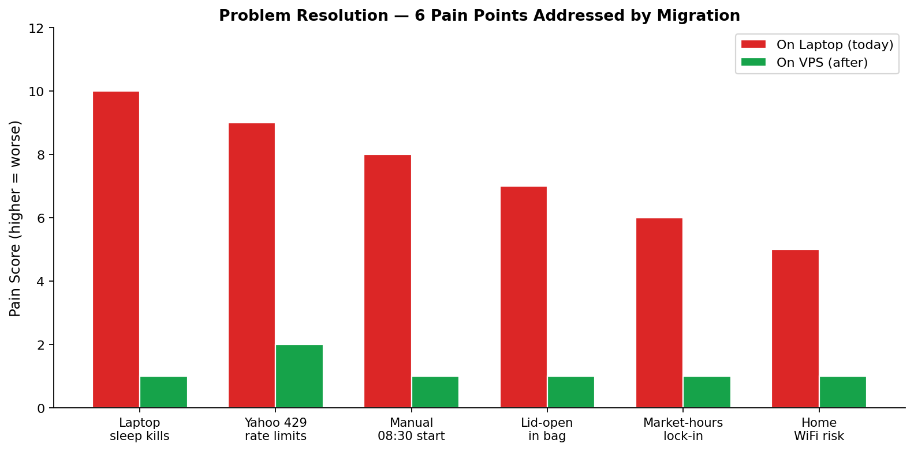
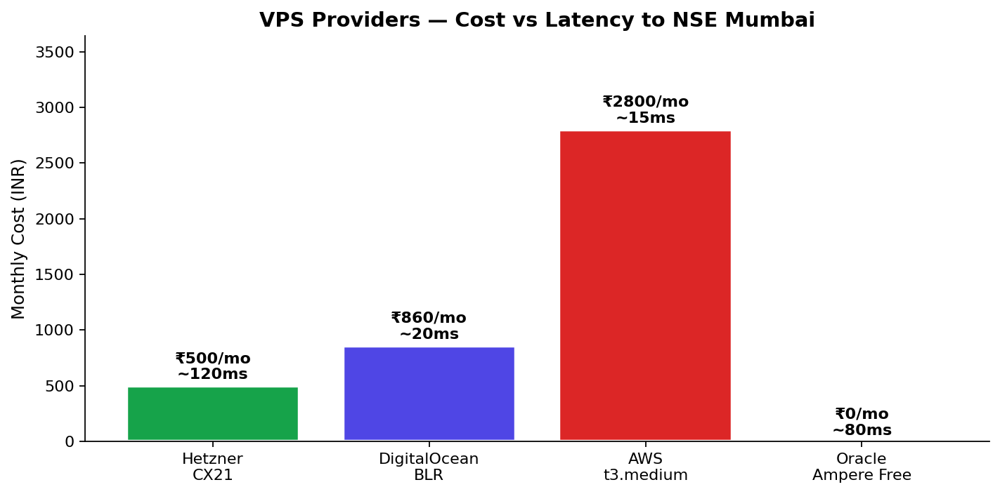
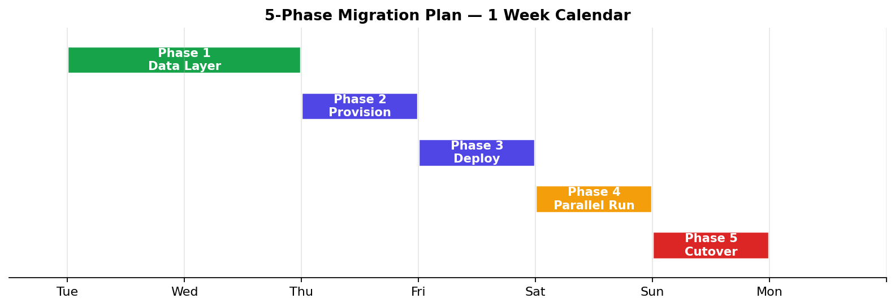

Apr 17: Laptop slept in bag while markets were open — all 5 paper-trade engines died.
Apr 20: Yahoo returned HTTP 429 during morning retrain — 10 minutes of scrambling before market open.
These are not bugs in our code. They are fundamental limits of the platform: a laptop is the wrong host for a 24/7 trading system.


| Provider | Specs | Mumbai Latency | Cost/mo | Notes |
|---|---|---|---|---|
| Hetzner CX21 | 3 vCPU, 4 GB | ~120 ms | ₹500 | EU-based. Great value, higher latency hurts intraday data refresh |
| DigitalOcean BLR | 2 vCPU, 2 GB | <20 ms | ₹860 | Bangalore. Right abstraction level. Simple UX. Predictable pricing |
| AWS t3.medium | 2 vCPU, 4 GB | <15 ms | ₹2,800 | Mumbai region. 3× cost for complexity you don't need |
| Oracle Ampere Free | 4 vCPU, 24 GB | ~80 ms | ₹0 | Actually free. ARM arch (Rust rebuild needed). Risk: account cancellation |
Latency: <20 ms to NSE means Yahoo/Shoonya calls return in under half a second — critical during the 9:15-9:20 opening volatility.
Cost predictability: Fixed ₹860/mo. No AWS surprise bills from bandwidth or API calls.
Simplicity: 5-minute droplet provisioning. One-click snapshots. Clean dashboard. You won't need to hire a DevOps.
SSH-first: Same workflow as laptop — git pull, systemd restart, done.

prototype/v4/composite_scorer.py to prefer Shoonya WebSocket when available,
fall back to yfinance if Shoonya disconnects. Existing scripts/shoonya-download.py
already proves connectivity works. Add retry-with-exponential-backoff for Yahoo calls.
git clone repo. rsync ML models (prototype/v4/models/archive/*) + CSV data.
cargo build --release Rust engine. Write systemd unit files for each engine
(Restart=always, User=tradepilot, EnvironmentFile=.env). Enable cron for
run-v5-tomorrow.sh at 08:30 IST.
| Option | Reliability | Cost | Verdict |
|---|---|---|---|
| Yahoo Finance (current) | Low — 429 rate limits | Free | Fallback only |
| Shoonya broker API | High — official NSE feed | Free w/ account | Primary |
| Paid vendor (Truedata, etc) | Highest | ₹2000+/mo | Overkill for paper trading |
Keep position state in JSON files (simple, atomic writes already applied in learning #004).
DevPilot PostgreSQL stays on VPS for analytics. Nightly pg_dump to a backup disk.
ML model archive (prototype/v4/models/archive/YYYY-MM-DD/) remains the rollback truth.
Replace nohup + custom watchdog with systemd. Each engine is a .service file
with Restart=always. Systemd handles: crash-restart, log rotation, startup ordering,
dependency graph, user/group isolation. Zero custom monitoring code needed.
Tempting, but unnecessary complexity for this workload. Docker adds ~300 MB per container, image rebuild per deploy, and extra layer of debugging. Native systemd with Python venv is simpler for 7-process workload. Reconsider when we add horizontal scaling or multi-tenant.
Three channels:
| Channel | Use case | Setup |
|---|---|---|
| SSH | Live debugging, deploys | SSH keys on iPhone/laptop, 5 min |
| Flask dashboard | Mobile viewing of status/P&L | Cloudflare Tunnel → free subdomain |
| Telegram | Push alerts | Already working |
.env file on VPS with 0600 permissions. Contains Telegram bot token,
Shoonya API creds, DB password. Never committed to git. systemd loads via
EnvironmentFile=/home/tradepilot/.env. Rotate Shoonya password quarterly.
| Problem today | Root cause | Resolution on VPS |
|---|---|---|
| Laptop sleep kills engines | macOS clamshell firmware event | VPS runs 24/7. No physical lid. |
| Yahoo HTTP 429 during morning retrain | Laptop IP shared with other yfinance users | Shoonya official feed. Different host, different IP if needed. |
| Manual 08:30 IST start every day | No scheduling on laptop | systemd timer fires automatically. You sleep in. |
| Lid-open-in-bag gymnastics | No VPS to run on | Laptop freed for coding. No gymnastics. |
| Home WiFi drop kills live session | Single network dependency | Data center uplink 99.99%. Your WiFi is just for dashboard viewing. |
| Location lock — only works from Mumbai desk | Physical machine | SSH from phone anywhere. Push alerts reach you in meetings. |
| Battery life / heat stress | Laptop isn't designed for 6-hour CPU sessions | VPS has proper cooling and power. Laptop gets its life back. |
Direct cost: ₹860/mo × 12 = ₹10,320/year for the VPS.
Data: Shoonya is ₹0. Yahoo as fallback is ₹0.
Time savings: 10 min/day of manual pre-flight × 250 trading days = 41 hours of your life back.
Trade loss prevention: Apr 17's laptop-sleep event lost ~Rs 500 of realized wins. One prevented incident pays for 7 months of VPS.
Psychological: No more bag-gymnastics. No more pre-market anxiety. Priceless.
| Decision | Options | Default |
|---|---|---|
| Provider | DigitalOcean BLR / Hetzner / AWS / Oracle | DigitalOcean BLR ₹860/mo |
| Shoonya API access | Use existing account / Open new / Skip for now | Use existing (you have one) |
| Go-Live day | Next Monday / Delay by 1 week / Don't migrate | Next Monday (Apr 27) |
| Keep laptop as backup? | 2 weeks / 1 month / Decommission immediately | 2 weeks cold backup |
| Paid data vendor? | None (Shoonya) / Truedata / TrueBars | None — revisit after 3 months |
The laptop is a great dev machine. It is not a trading platform.
Every hour spent keeping it alive — caffeinate hacks, lid-open bags, sudo pmset incantations — is an hour not spent on strategy.
Approve the plan. One week later, you'll never touch run-v5-tomorrow.sh on your laptop again.